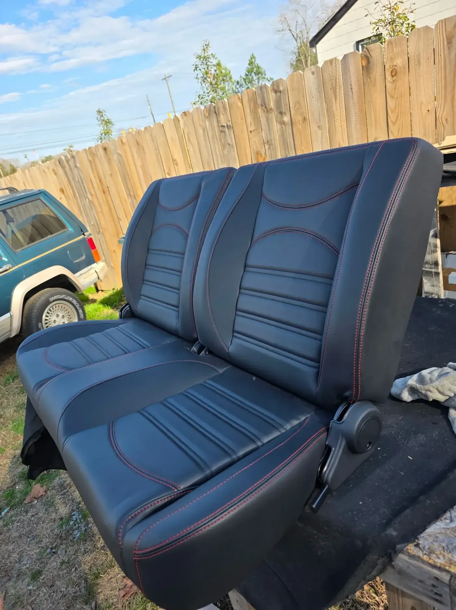
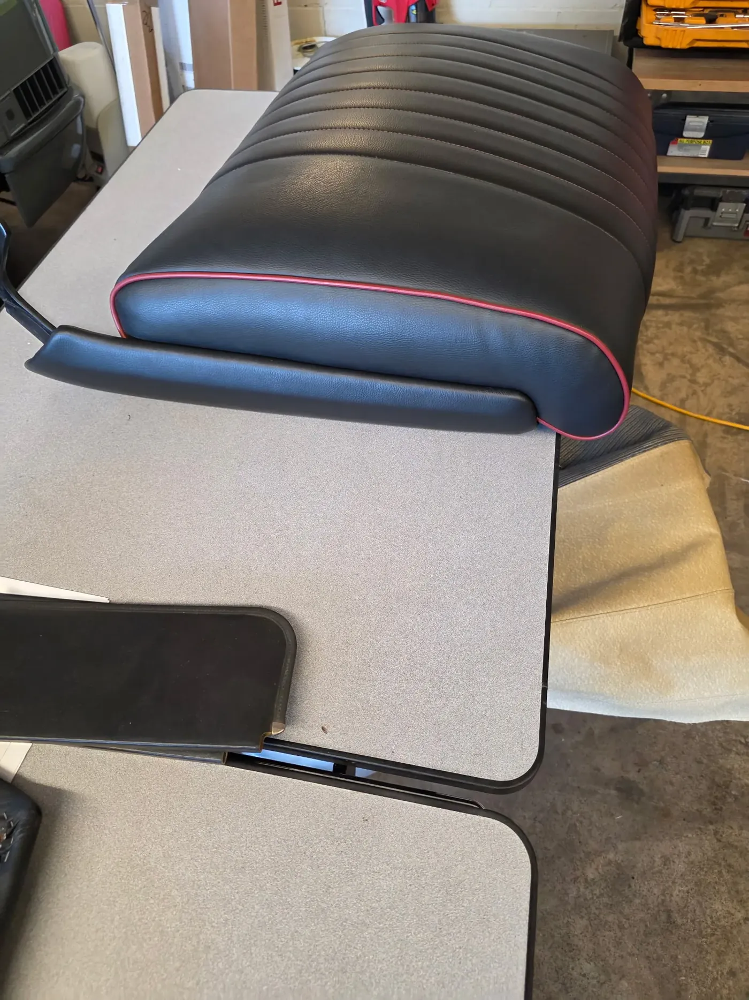
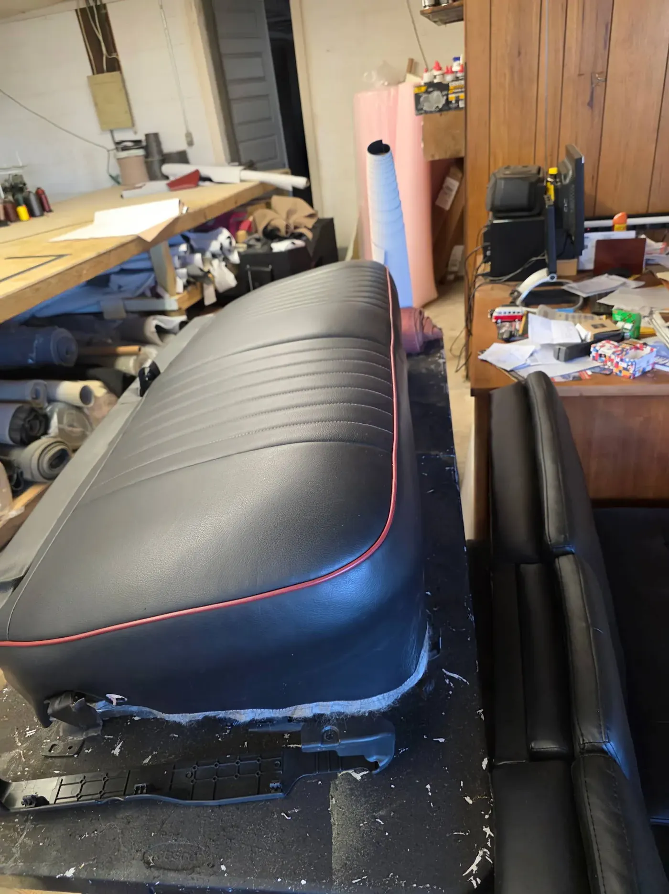

What happens after you call
No mystery and no deposit to find out what a job costs. Here is the whole sequence.

You bring it in
Drive the vehicle over, trailer the boat, or carry in a single seat. We look at it with you and talk through what you want.

We quote in person, free
We check what is under the cover — foam, frames, pads, bows — because that is where surprises live. Then you get an itemised estimate at no charge.
You pick the materials
We keep samples in the shop. Vinyl or canvas, glass or plastic window, period-correct or upgraded — you see and feel the difference before deciding.

We do the work
Disassembly, repair of what is underneath, then cutting and stitching. The same hands that quoted the job do the work.

Fitting and finish
Nothing leaves until it fits properly. Weather sealing on marine and convertible work, and a final check with you at pickup.

Ready to transform your interior?
Bring new life to your seats, tops, and trim with work built for comfort, durability, and long-term pride of ownership.
Free estimates · In-person quotes · Monroe, NC since 1989